6. ルーティングを作ってみる¶
FlexにはTaskRouterという機能があり、それを使うことで、 顧客からサポート担当者への通話の振り分けを自動化することができます。
TaskRouterとは、あらゆるタイプのタスクを、それらを最も適切に処理できる人とプロセスに割り当てるためのシステムです。

この章では、
コールセンターにエージェントを追加し、2人のWokerに異なるスキルを割り当てます
Twilio Studioで設計されたIVRを変更して、Twilio TaskRouterで定義された2つのキューに会話を渡します
※ 自動音声を使い顧客を専用の担当者と会話させる
6-1. Workspaceの構成¶
TaskRouterに指示を与えてタスクを処理するにはWorkspaceというものが必要になります。
Flexのデプロイ時に初期で作られています。 本ハンズオンではそれを使います。
https://www.twilio.com/console/taskrouter/workspacesに遷移するとWorkspaceの一覧が表示されています。
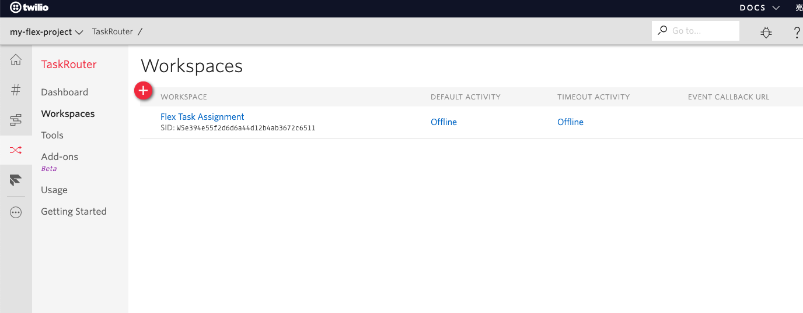
Workspaceの要素として以下のものがあります。
Tasks担当者に連絡しようとしている顧客を表します
WorkersTaskをこなすべき担当者
TaskQueues複数のWorkerによって処理されるTasksを保持
WorkflowsTasksをTaskQueuesに配置する役目を負います
ActivitiesWorkerの状態の候補で、たとえば待機中、オフライン、取り込み中、などです
これらを構成していくことになります、
6-2. ユーザーの追加¶
Flexプロジェクトにもう一人管理ユーザーを追加します。
※ 本番環境では、SSOユーザーサインインを使用してFlexエージェントを管理する必要があります
https://www.twilio.com/console/project/usersに遷移し、+をクリックします。
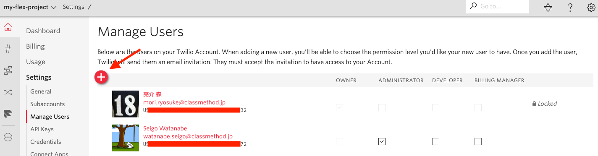
Email Addressにはアカウント登録した以外のメールアドレスを入力します
Roleには
Administratorにチェックを入れます。
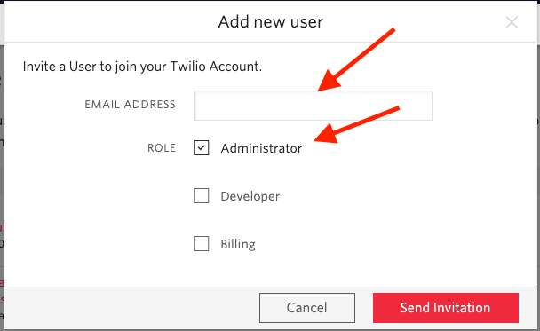
受信したメールで新しいユーザーの確認をします。
その後、シークレットウィンドウか別のアドレスでログインし、 Flex UIを起動します。
この時点では2人のユーザーがFlexにログインしている状態になります。
6-3. エージェントにSkillを割り当てる¶
2つのスキルを作成して、エージェントに割り当てます。
元の管理者のFlexインスタンスウィンドウからFlex管理ペインに移動し, SKILLSをクリックします。
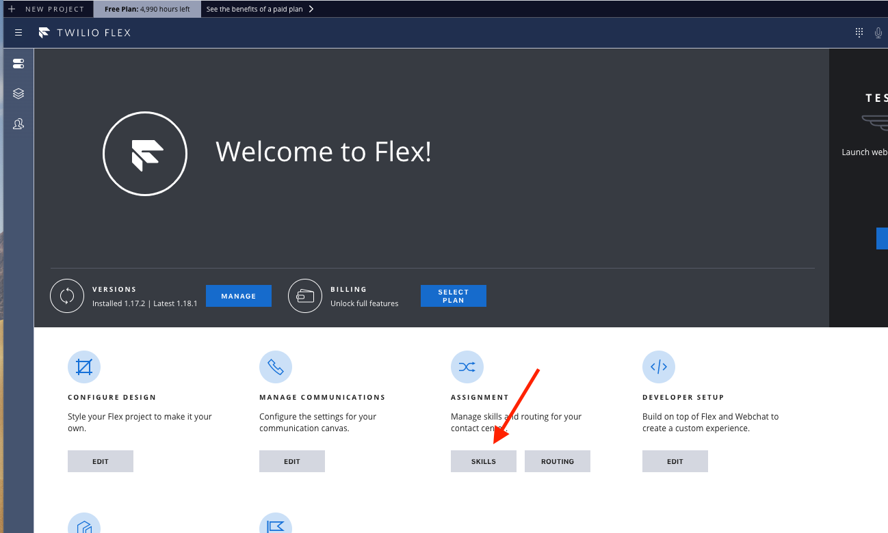
左側のADD NEW SKILLでAWSとGCPという名前のスキルを作成します。
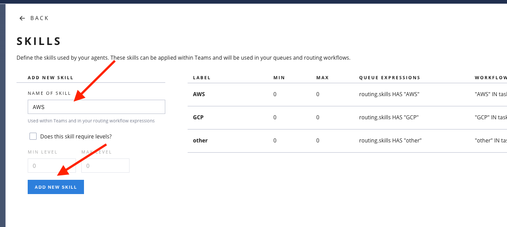
チーム画面にいき、プルダウンメニューをAll Agentsに変更します
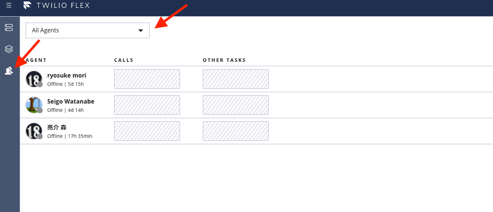
エージェント一人にAWS, もう一人にGCPのスキルを設定します。
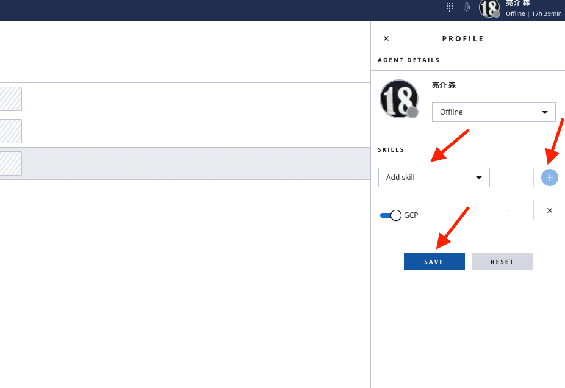
6-4. TaskRouterを使用してTaskQueuesの作成¶
AWS、GCPのスキルがついている人に着信をルーティングする設定を行います。
元の管理者のFlexインスタンスウィンドウからFlex管理ペインに移動し, ROUTINGをクリックします。
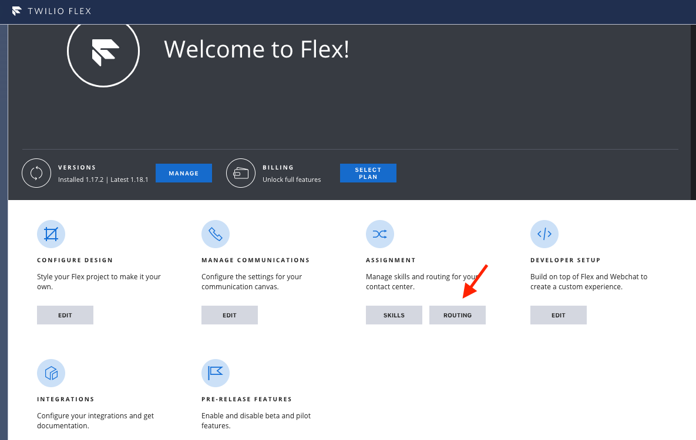
workspacesの一覧画面に遷移するので、表示されているFlex Task Assignmentをクリックします。
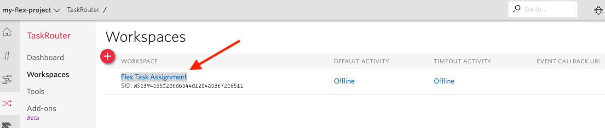
TaskQueueの作成¶
View all TaskQueuesをクリックします、
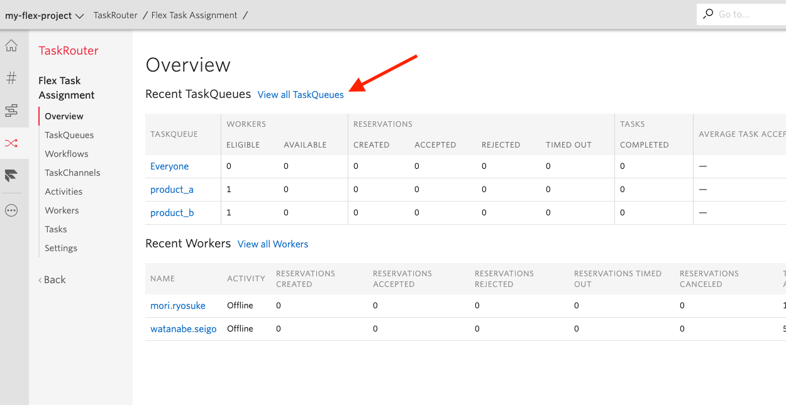
+をクリックして新しいTaskQueueを作成します。
AWSとGCPの2つ作ってください。
TASKQUEUE NAMEAWSGCP
QUEUE EXPRESSION(routing.skills HAS 'AWS')(routing.skills HAS 'GCP')
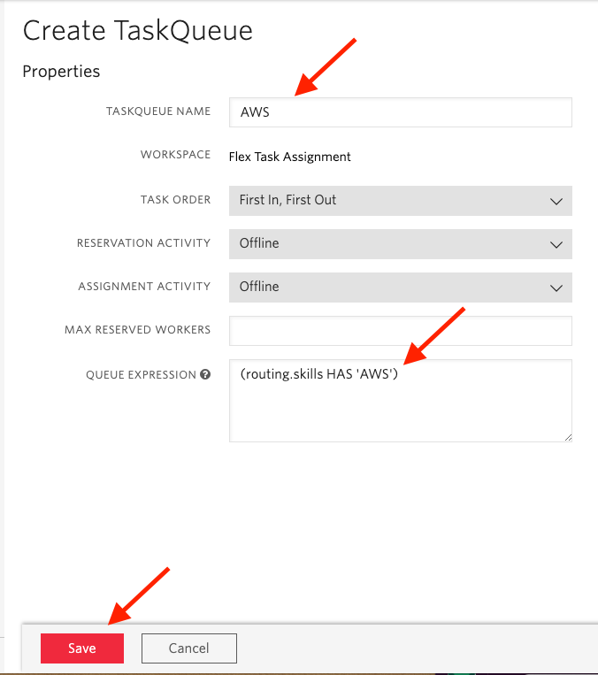
Workflowの作成¶
左側のメニューにあるWorkflowsをクリックします。
+をクリックして新しいWorkflowを作成します。
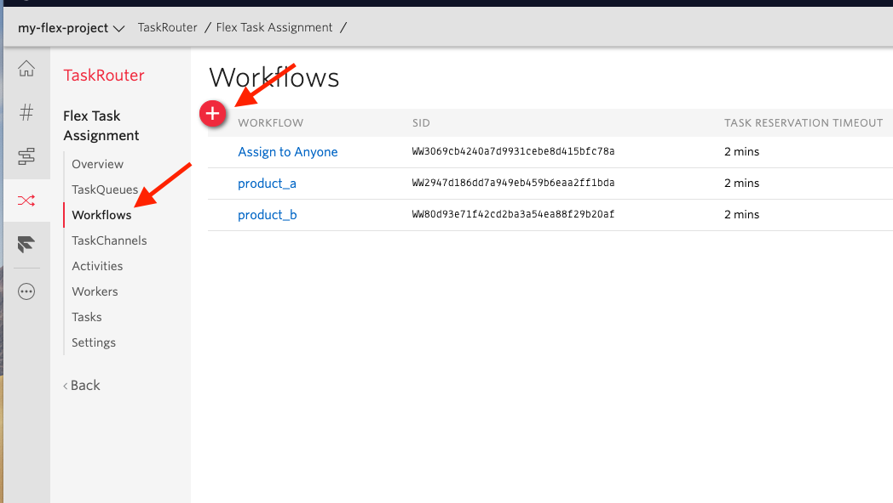
AWSとGCPの2つ作ってください。
WORKFLOW NAMEAssign to AWSAssign to GCP
同じ画面のADD a Filterをクリックしてフィルターを作成します。
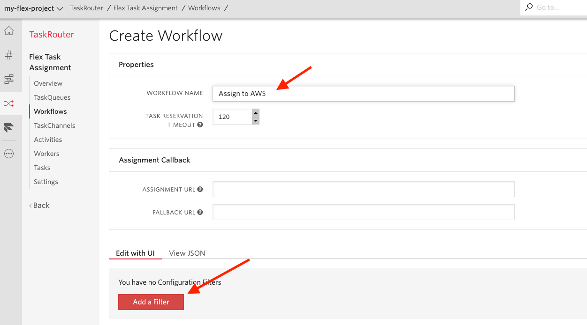
MATCHING WORKERSの見出しの下で、QUEUEフィールドをクリックして編集します。それをAWS/GCPに設定し、チェックボックスをクリックして保存します。
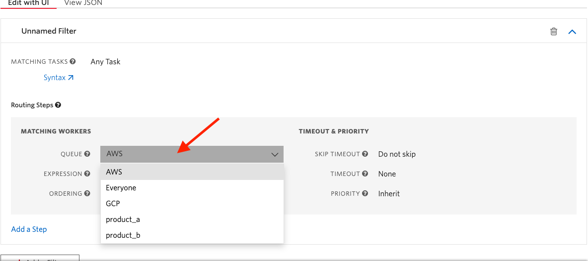
かなり基本的な手順ですが、Skill、Workflow、TaskQueueの組み合わせを使用して非常に複雑なワークフローを設定できます.
この章は以上で終了になります。